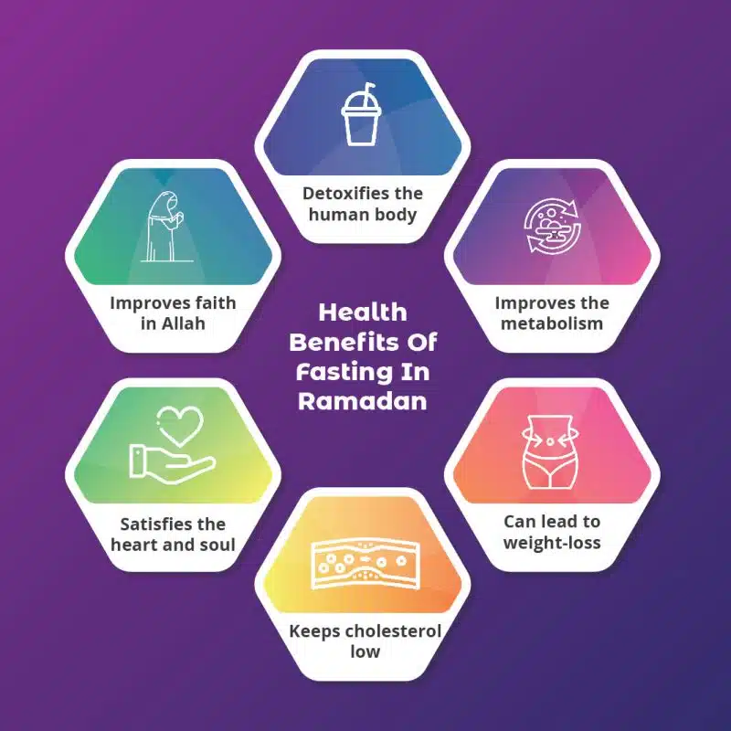

Ramadan is the ninth month of the Islamic calendar,observed by Muslims worldwide as a month of fasting (sawm), prayer (salah), reflection, and community.A commemoration of Muhammad's first revelation, the annual observance of Ramadan is regarded as one of theFive Pillars of Islam and lasts twenty-nine to thirty days, from one sighting of the crescent moon to the next.Fasting from dawn to sunset is obligatory (fard) for all adult Muslims who are not acutely or chronically ill, travelling, elderly, breastfeeding, diabetic, pregnant, or menstruating.The predawn meal is referred to as suhur, and the nightly feast that breaks the fast is called iftar.Although rulings (fatawa) have been issued declaring that Muslims who live in regions with a midnight sun or polar night should follow the timetable of Mecca, it is common practice to follow the timetable of the closest country in which night can be distinguished from day.The spiritual rewards (thawab) of fasting are believed to be multiplied during Ramadan.Accordingly, during the hours of fasting, Muslims refrain not only from food and drink, but also tobacco products, sexual relations, and sinful behavior, devoting themselves instead to prayer and study of the Quran.
Ramadan is the month in which the Quran was revealed as a guide for humanity with clear proofs of guidance and the standard ˹to distinguish between right and wrong˺. So whoever is present this month, let them fast. But whoever is ill or on a journey, then ˹let them fast˺ an equal number of days ˹after Ramaḍân˺. Allah intends ease for you, not hardship, so that you may complete the prescribed period and proclaim the greatness of Allah for guiding you, and perhaps you will be grateful.
Muslims hold that all scripture was revealed during Ramadan, the scrolls of Abraham, Torah, Psalms, Gospel, and Quran having been handed down on the first, sixth, twelfth, thirteenth (in some sources, eighteenth) and twenty-fourth Ramadans,respectively. Muhammad is said to have received his first quranic revelation on Laylat al-Qadr, one of five odd-numbered nights that fall during the last ten days of Ramadan.Although Muslims were first commanded to fast in the second year of Hijra (624 CE),they believe that the practice of fasting is not in fact an innovation of monotheism but rather has always been necessary for believers to attain fear of God They point to the fact that the pre-Islamic pagans of Mecca fasted on the tenth day of Muharram to expiate sin and avoid drought.Philip Jenkins argues that the observance of Ramadan fasting grew out of "the strict Lenten discipline of the Syrian Churches," a postulation corroborated by other scholars, including theologian Paul-Gordon Chandler,but disputed by some Muslim academics.
The first and last dates of Ramadan are determined by the lunar Islamic calendar.
Because the Hilāl, or crescent moon, typically occurs approximately one day after the new moon, Muslims can usually estimate the beginning of Ramadan;however, many prefer to confirm the opening of Ramadan by direct visual observation of the crescent.
The Laylat al-Qadr (Arabic: لیلة القدر) or "Night of Power" is the night that Muslims believe the Quran was first sent down to the world, and Muhammad received his first quranic revelation from it. The night is considered to be the holiest night of the year. It is generally believed to have occurred on an odd-numbered night during the last ten days of Ramadan; the Dawoodi Bohra believe that Laylat al-Qadr was the twenty-third night of Ramadan.
The holiday of Eid al-Fitr (Arabic: عيد الفطر), which marks the end of Ramadan and the beginning of Shawwal,the next lunar month, is declared after a crescent new moon has been sighted or after completion of thirty days of fasting if no sighting of the moon is possible. Eid celebrates the return to a more natural disposition (fitra) of eating, drinking, and marital intimacy.
The common practice is to fast from dawn to sunset. The pre-dawn meal before the fast is called the suhur, while the meal at sunset that breaks the fast is called iftar.Muslims devote more time to prayer and acts of charity, striving to improve their self-discipline, motivated by hadith:"When Ramadan arrives, the gates of Paradise are opened and the gates of hell are locked up and devils are put in chains."
Ramadan is a time of spiritual reflection, self-improvement, and heightened devotion and worship. Muslims are expected to put more effort into following the teachings of Islam. The fast (sawm) begins at dawn and ends at sunset. In addition to abstaining from eating and drinking during this time, Muslims abstain from sexual relations and sinful speech and behaviour during Ramadan fasting or month. The act of fasting is said to redirect the heart away from worldly activities, its purpose being to cleanse the soul by freeing it from harmful impurities. Muslims believe that Ramadan teaches them to practice self-discipline, self-control,sacrifice, and empathy for those who are less fortunate, thus encouraging actions of generosity and compulsory charity (zakat). Muslims also believe fasting helps instill compassion for the food-insecure poor.Exemptions from fasting include those traveling, menstruating, severely ill, pregnant, or breastfeeding. However, Muslims in these categories may still choose to fast, in order to satisfy their spiritual needs, even though it is not recommended by hadith. Those unable to fast are obligated to make up the missed days later
Each day, before dawn, Muslims observe a pre-fast meal called the suhoor. After stopping a short time before dawn, Muslims begin the first prayer of the day, Fajr.
At sunset, families break the fast with the iftar, traditionally opening the meal by eating dates to commemorate Muhammad's practice of breaking the fast with three dates. They then adjourn for Maghrib, the fourth of the five required daily prayers, after which the main meal is served.Social gatherings, many times in buffet style, are frequent at iftar. Traditional dishes are often highlighted, including traditional desserts, particularly those made only during Ramadan. Water is usually the beverage of choice, but juice and milk are also often available, as are soft drinks and caffeinated beverages.In the Middle East, iftar consists of water, juices, dates, salads and appetizers; one or more main dishes; and rich desserts, with dessert considered the most important aspect of the meal.Typical main dishes include lamb stewed with wheat berries, lamb kebabs with grilled vegetables, and roasted chicken served with chickpea-studded rice pilaf. Desserts may include luqaimat, baklava or kunafeh.Over time, the practice of iftar has evolved into banquets that may accommodate hundreds or even thousands of diners.The Sheikh Zayed Grand Mosque in Abu Dhabi, the largest mosque in the UAE, feeds up to thirty thousand people every night.Some twelve thousand people attend iftar at the Imam Reza shrine in Mashhad.
Zakat, often translated as "the poor-rate", is the fixed percentage of income a believer is required to give to the poor; the practice is obligatory as one of the pillars of Islam. Muslims believe that good deeds are rewarded more handsomely during Ramadan than at any other time of the year; consequently, many Muslims donate a larger portion – or even all – of their yearly zakat during this month.
Tarawih (Arabic: تراويح) are extra nightly prayers performed during the month of Ramadan. Contrary to popular belief, they are not compulsory
Muslims are encouraged to read the entire Quran, which comprises thirty juz' (sections), over the thirty days of Ramadan. Some Muslims incorporate a recitation of one juz' into each of the thirty tarawih sessions observed during the month.
In some Islamic countries, lights (fanous) are strung up in public squares and across city streets,a tradition believed to have originated during the Fatimid Caliphate, where the rule of Caliph al-Mu'izz li-Din Allah was acclaimed by people holding lanterns.

On the island of Java, many believers bathe in holy springs to prepare for fasting, a ritual known as Padusan.The city of Semarang marks the beginning of Ramadan with the Dugderan carnival, which involves parading the warak ngendog, a horse-dragon hybrid creature allegedly inspired by the Buraq.In the Chinese-influenced capital city of Jakarta, firecrackers are widely used to celebrate Ramadan, although they are officially illegal.Towards the end of Ramadan, most employees receive a one-month bonus known as Tunjangan Hari Raya.Certain kinds of food are especially popular during Ramadan, such as large beef or buffalo in Aceh and snails in Central Java.The iftar meal is announced every evening by striking the bedug, a giant drum, in the mosque.
Common greetings during Ramadan include Ramadan mubarak and Ramadan kareem, which mean (have a) "blessed Ramadan" and "generous Ramadan" respectively.During Ramadan in the Middle East, a mesaharati beats a drum across a neighbourhood to wake people up to eat the suhoor meal.Similarly in Southeast Asia, the kentongan slit drum is used for the same purpose.Ramadan attracts significant increases in television viewership, as prime time coincides with the iftar. Broadcasters in the Arab world traditionally premiere serial dramas known as musalsal during Ramadan; they are similar in style to Latin American telenovelas, and are typically around 30 episodes in length so that they run over the length of the month.Advertisers in the region have considered Ramadan to be comparable to the Super Bowl on U.S. television in terms of impact and importance; the cost of a 30-second commercial in peak time during Ramadan is usually more than double than normal.
There are various health effects of fasting in Ramadan. Ramadan fasting is considered safe for healthy individuals; it may pose risks for individuals with certain pre-existing conditions. Most Islamic scholars hold that fasting is not required for those who are ill. Additionally, the elderly and pre-pubertal children are exempt from fasting.Pregnant or lactating women are also exempt from fasting during Ramadan.here are known health risks involved in pregnant women who fast, which include the potential of induced labour and gestational diabetes.
There are some health benefits of fasting in Ramadan including increasing insulin sensitivity and reducing insulin resistance.[130] It has also been shown that there is a significant improvement in 10 years coronary heart disease risk score and other cardiovascular risk factors such as lipids profile, systolic blood pressure, weight, BMI and waist circumference in subjects with a previous history of cardiovascular disease.The fasting period is usually associated with modest weight loss, but weight can return afterwards.
In many cultures, it is associated with heavy food and water intake during Suhur and Iftar times, which may do more harm than good.Ramadan fasting is safe for healthy people provided that overall food and water intake is adequate but those with medical conditions should seek medical advice if they encounter health problems before or during fasting.
The education departments of Berlin and the United Kingdom have tried to discourage students from fasting during Ramadan, as they claim that not eating or drinking can lead to concentration problems and bad grades.
A review of the literature by an Iranian group suggested fasting during Ramadan might produce renal injury in patients with moderate (GFR <60 ml/min) or severe kidney disease but was not injurious to renal transplant patients with good function or most stone-forming patients.
A study on 55 professional Algerian soccer players showed that performance during Ramadan declined significantly for speed, agility, dribbling speed and endurance, and most stayed low 2 weeks after the conclusion of Ramadan.
The length of the dawn to sunset time varies in different parts of the world according to summer or winter solstices of the Sun. Most Muslims fast for eleven to sixteen hours during Ramadan. However, in polar regions, the period between dawn and sunset may exceed twenty-two hours in summer. For example, in 2014, Muslims in Reykjavik, Iceland, and Trondheim, Norway, fasted almost twenty-two hours, while Muslims in Sydney, Australia, fasted for only about eleven hours. In areas characterized by continuous night or day, some Muslims follow the fasting schedule observed in the nearest city that experiences sunrise and sunset, while others follow Mecca time.
As sunrise and sunset occur sixteen times each a day in low-Earth orbit, Muslim astronauts in space schedule religious practices around the time zone of the last place on Earth they were on. For example, this means an astronaut from Malaysia launching from the Kennedy Space Center in Florida would center their fast according to sunrise and sunset times in Cape Canaveral, in Florida's Eastern Time. This includes times for daily prayers, as well as sunset and sunrise for Ramadan.
Muslims continue to work during Ramadan;however, in some countries, such as Oman and Lebanon, working hours are shortened.It is often recommended that working Muslims inform their employers if they are fasting, given the potential for the observance to impact performance at work.The extent to which Ramadan observers are protected by religious accommodation varies by country. Policies putting them at a disadvantage compared to other employees have been met with discrimination claims in the United Kingdom and the United States.An Arab News article reported that Saudi Arabian businesses were unhappy with shorter working hours during Ramadan, some reporting a decline in productivity of 35–50%.The Saudi businesses proposed awarding salary bonuses in order to incentivize longer hours.Despite the reduction in productivity, merchants can enjoy higher profit margins in Ramadan due to increase in demand.